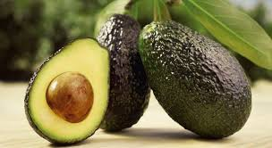
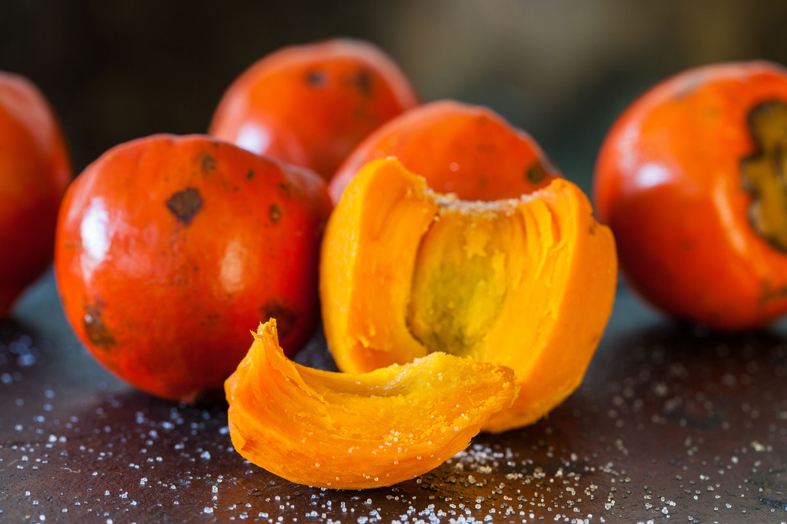
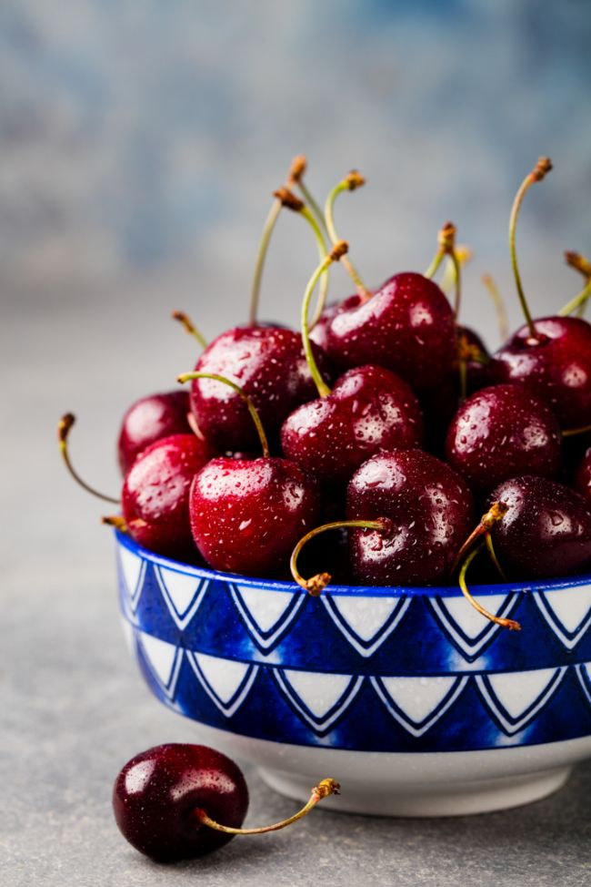
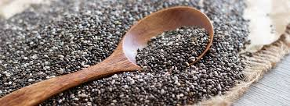

Nuestros Productos
Salud Cardiovascular

Yogur de Aguacate
Delicioso yogur artesanal con aguacate fresco, elaborado con mermelada casera de aguacate.
- ✓ Contiene grasas saludables que protegen tu corazón
- ✓ Rico en potasio para el funcionamiento muscular
- ✓ Aporta fibra para mejorar la digestión
$4.500
Energía Natural

Yogur de Chontaduro
Yogur natural con chontaduro, fruta tropical de la biodiversidad payanesa.
- ✓ Potente energizante natural
- ✓ Rico en Vitamina A para salud de vista y piel
- ✓ Alto contenido de fibra que favorece la digestión
$4.500
Defensas y Descanso

Yogur de Cereza
Yogur artesanal con cerezas frescas, perfecto para cuidar tu salud.
- ✓ Rico en antioxidantes y Vitamina C
- ✓ Fortalece tus defensas naturales
- ✓ Protege las células del daño oxidativo
$4.500
Bienestar Integral

Yogur de Chía
Yogur natural con semillas de chía hidratadas, fuente de bienestar integral.
- ✓ Aporta Omega 3 para la salud del corazón
- ✓ Contiene proteína vegetal
- ✓ Mantiene niveles de energía estables
$4.500